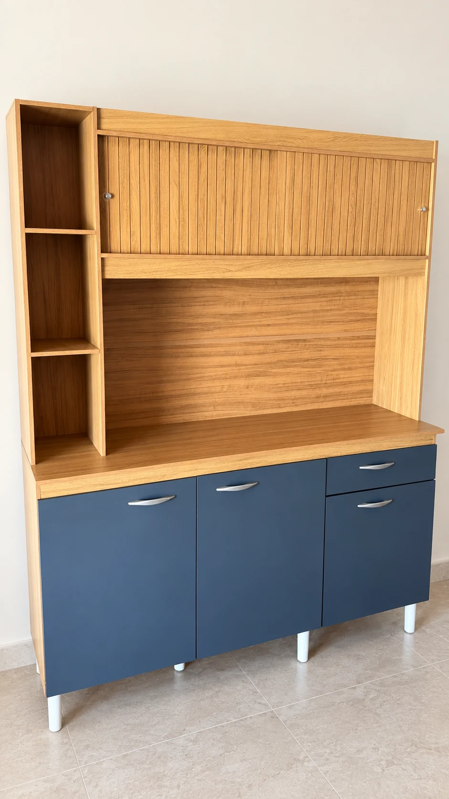

Ambientação com IAVer original
Armário azul e amadeirado
Nichos abertos e frentes inferiores azuis.
Móveis novos e usados em Goiânia
Um armário para organizar, uma penteadeira para o quarto, um sofá para a sala. Veja referências de móveis novos e usados e pergunte ao Fábio sobre a peça que você gostou.

Ambientação com IAVer original
Escolha um ambiente para explorar. As fotos são referências publicadas pela loja; o Fábio confirma a disponibilidade, as medidas e a condição de cada peça.
Ambientação com IAVer original
Nichos abertos e frentes inferiores azuis.
Ambientação com IAVer original
Tampo articulado com divisórias internas.
Ambientação com IAVer original
Assentos amplos e encosto com costuras marcadas.
Capitonê em tom escuro.
Duas portas e freezer na parte inferior.
Referências de modelos expostos na loja.
Ambientação com IAVer original
Composição clara com prateleiras.
Detalhe das frentes e dos puxadores.
Nas imagens com ambientação, o cenário foi criado com IA. O registro usado como referência fica em “Ver original”. Esta seleção reúne publicações da loja. Confirme medidas, configurações e disponibilidade na conversa.
Novos e usados têm espaço por aqui. Para encontrar uma boa opção para sua casa, leve uma referência e as medidas para a conversa com o Fábio.
Confira as medidas do ambiente, de portas e dos caminhos até o lugar da peça.
Pergunte se o móvel é novo ou usado e peça detalhes sobre o estado de conservação.
A seleção reúne publicações da loja. Confirme se a referência continua disponível e quais são as condições atuais.
Prepare sua consulta e copie o texto. O botão abre o link oficial de WhatsApp da loja; depois, cole a mensagem na conversa.
Goiânia, GOA localização em Goiânia é corroborada por fontes públicas. Confirme o endereço atual ao conversar com a loja.
Buscar localização da lojaAs fotos são referências de publicações da loja. O Fábio confirma se a peça continua disponível, se é nova ou usada, suas medidas e as condições atuais.
Escolha a referência, revise e copie o texto. Abra o WhatsApp pelo botão da loja e cole na conversa. Esse link oficial não preenche a mensagem automaticamente.